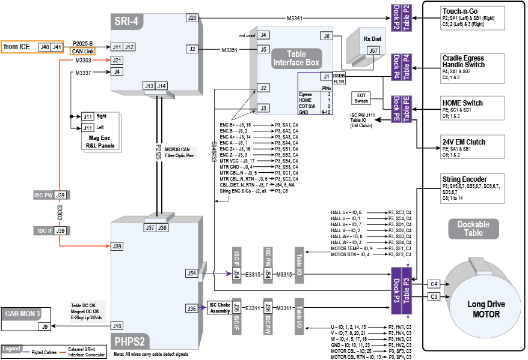
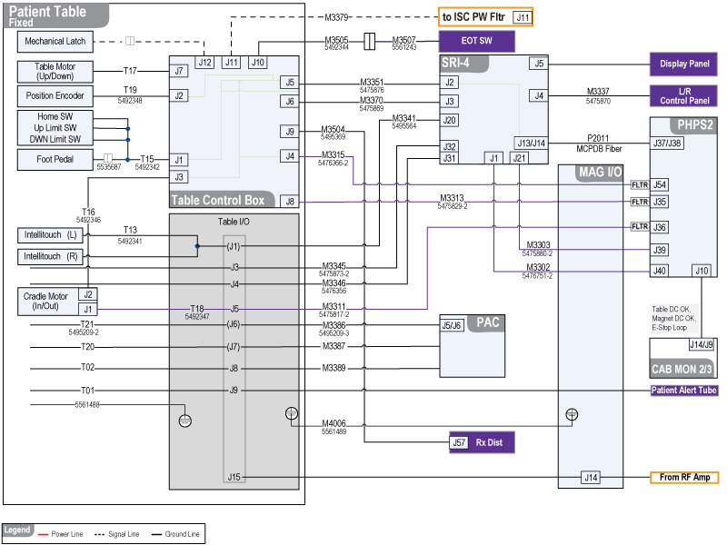
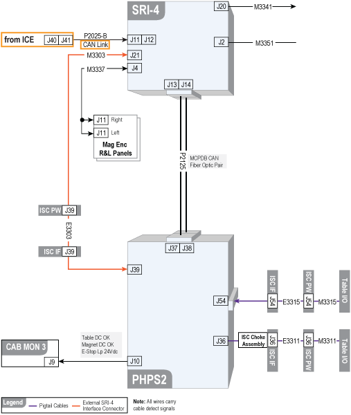
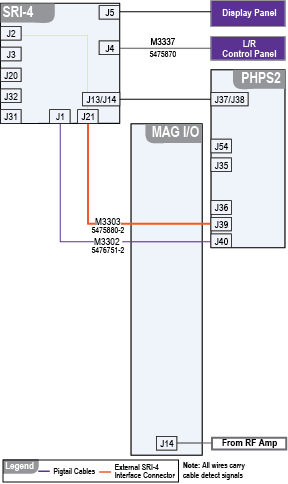
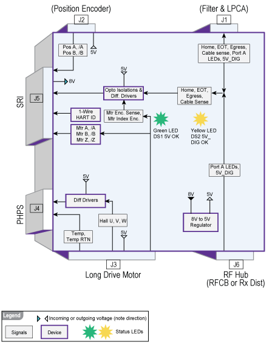

- 00000018WIA30C95CB0GYZ
- id_20619821.37
- Jul 28, 2025 5:31:18 PM
Cradle motion hardware and theory of operation
Cradle motion hardware and theory of operation.
Cradle motion hardware - dockable table

Theory of operation - dockable table
- At power up, the Patient Handling Power Supply 2 (PHPS2) detects long drive motor hall signals (U, /U, V, /V, W, /W) at PHPS2 J54. The PHPS2 servo amplifier uses these signals to properly phase motor power signals from PHPS2 J36 to move the cradle in the correct direction. The PHPS2 cannot maintain cradle motion without correct long drive motor hall signals.
- Long drive motor A, B, Z signals returned to Scan Room Interface (SRI-4) J2 determine the motor rotation velocity.
- Position encoder A, B signals returned to SRI-4 J2 determine cradle velocity and position.
- Motor and cradle velocity are compared for clutch slip.
- EM clutch 24V is always active/on except during an E-stop event.
- Squeezing the egress handle at the foot/patient end of the cradle results in the long drive motor driving the cradle, at high rate of speed, in the Home direction.
- Cradle motion initiated by SRI-4 from right or left panel button push or system command from Integrated Control Engine (ICE).
- Right and left panels share same button motion signals to SRI-4.
- Data critical to motion and detection is shared from SRI-4 J21 on cable Runs M3303 and E3303 to PHPS2 J39. See Data shared on cable path between SRI J21 to PHPS2 J39.
- The SRI initiates motion from the PHPS2 motor controller and supplies ‘tuning’ information used by the controller control loop over cable Run P2125, MCPDB CAN fiber.
- The PHPS2 delivers motor power from J36 as a set of three pulse-width modulated impulses (U, V, W; do not confuse with hall signals) to rotate the long drive motor shaft. The PHPS2 MUST receive hall signals back from the motor, of correct timing and sequence, to maintain motor drive shaft rotation for even a few degrees. Rotation of a few degrees is hard to detect visually. It is not recommended to troubleshoot motion problems by measuring the motor drive impulses from the PHPS2 with an oscilloscope or meter.
- The Rx Distribution module provides 5V (5V_DIG) used by optical switches and cable detect.
- The SRI-4 provides 8V used by the table interface box to generate 5V.
- Some signals pass through the table interface box unaltered. See Table interface box block diagram.
Cradle motion hardware - fixed table

Theory of operation - fixed table
The table control box routes signaling for SRI-4, longitudinal motor (position and motor encoders), and the PHPS2. It also serves as a 5 VDC power supply for the position and motors encoders that are an integral part of the longitudinal motor and 60 VDC power supply for the dock motor. The table control box functions like the table interface box, but does more and contains a processor. Signals from Cradle Motor J2 pass into table control box J3 and out J4 unchanged. Almost all the other signals entering other table control box connectors are internally converted and output as differential signals, are internally buffered and output as new signals, or are processed internally with other signals to create new output signals.
- At power up, the PHPS2 detects long drive motor hall signals (U, /U, V, /V, W, /W) at PHPS2 J54. The PHPS2 servo amplifier uses these to properly phase motor power signals from PHPS2 J36 to move the cradle in the correct direction. The PHPS2 cannot maintain cradle motion without correct long drive motor hall signals.
- Long drive motor A, B, Z signals returned to Scan Room Interface (SRI-4) J2 determine the motor rotation velocity.
- Position encoder A, B signals returned to SRI-4 J2 determine cradle velocity and position.
- Motor and cradle velocity are compared for clutch slip.
- Cradle motion initiated by SRI-4 from right or left panel button push or system command from Integrated Control Engine (ICE)/CAN Fiber Board (CFB).
- Right and left panels share same button motion signals to SRI-4.
- Data critical to motion and detection is shared on cable Run M3369, from SRI J21 passing through Mag I/O J3, through cable Run M3303, to Pen Panel J39 and PHPS2 J39. See Data shared on cable path between SRI J21 to PHPS2 J39.
- The SRI initiates motion from PHPS2 motor controller and supplies ‘tuning’ information used by the controller control loop over MCPDB CAN fiber.
- The PHPS2 delivers motor power from J36 as a set of three pulse-width modulated impulses (U, V, W; do not confuse with hall signals) to rotate the long drive motor shaft. The PHPS2 MUST receive hall signals back from the motor, of correct timing and sequence, to maintain motor drive shaft rotation for even a few degrees. Rotation of a few degrees is hard to detect visually. It is not recommended to troubleshoot motion problems by measuring the motor drive impulses from the PHPS2 with an oscilloscope or meter.
- The Rx Distribution module provides 5V (5V_DIG) used by LPCA optical switches and cable detect, and controls Port A LEDs.
- The SRI-4 provides 8V used by the table interface box to generate 5V.
- Some signals pass through the table interface box unaltered. See Table interface box block diagram.
Data shared on cable path between SRI J21 to PHPS2 J39


| Pin | Direction | Signal name | Description |
|---|---|---|---|
| 1 | Output | DOCK_MTR_SENSE_L | Dock motor sense |
| 2 | Output | CAN_LPBK_L | CAN loopback |
| 3 | Output | PWR_MON_L | Power monitor indicator |
| 4 | Output | AMP_FAULT_L | Motion controller amplifier fault |
| 5 | - | - | - |
| 6 | Output | DOCK_PWR_CBL_L | Dock power cable detect |
| 7 | Output | LONG_DRV_CBL_L | Longitudinal motor cable detect |
| 8 | - | - | - |
| 9 | Input | MTR_ENC_A_L | Motor encoder A |
| 10 | Input | MTR_ENC_B_L | Motor encoder B |
| 11 | Input | MTR_ENC_INDEX_L | Motor encoder index |
| 12 | Input | POS_ENC_A_L | Position encoder A |
| 13 | Input | POS_ENC_B_L | Position encoder B |
| 14 | Input | DOCK_UP_CTL_L | Dock up motion control |
| 15 | Input | DOCK_DN_CTL_L | Dock down motion control |
| 16 | Input | FO_LB_EN_L | Fiber optic loopback enable |
| 17 | Input | AMP_RST_L | Motion controller amplifier reset |
| 18 | Input | MTR_EN_L | Motor enable |
| 19 | - | MCPDB_CBL_PRES | MCPDB cable present |
| 20 | Output | DOCK_MTR_SENSE_H | Dock motor sense |
| 21 | Output | CAN_LPBK_H | CAN loopback |
| 22 | Output | PWR_MON_H | Power monitor indicator |
| 23 | Output | AMP_FAULT_H | Motion controller amplifier fault |
| 24 | Output | MCPDB_CBL_PRES | MCPDB cable detect |
| 25 | Output | DOCK_PWR_CBL_H | Dock power cable detect |
| 26 | Output | LONG_DRV_CBL_H | Longitudinal motor cable detect |
| 27 | - | - | - |
| 28 | Input | MTR_ENC_A_H | Motor encoder A |
| 29 | Input | MTR_ENC_B_H | Motor encoder B |
| 30 | Input | MTR_ENC_INDEX_H | Motor encoder index |
| 31 | Input | POS_ENC_A_H | Position encoder A |
| 32 | Input | POS_ENC_B_H | Position encoder B |
| 33 | Input | DOCK_UP_CTL_H | Dock up motion control |
| 34 | Input | DOCK_DN_CTL_H | Dock down motion control |
| 35 | Input | FO_LB_EN_H | Fiber optic loopback enable |
| 36 | Input | AMP_RST_H | Motion controller amplifier reset |
| 37 | Input | MTR_EN_H | Motor enable |
Switch signal functional checks
| Function | Switch type (NO/NC) | Measurement point | Condition for test |
|---|---|---|---|
| (For fixed table) EOT | NC | Table control box J10 pins 2(NC) & 3(COM). Repeat at M3507/3505 Molex pins 1 (NC) and 3(COM). | N/A |
| (For fixed table) Home | NC | Table control box J1 pins 14(COM) and 15(NC) | N/A |
| (For fixed table) Up-limit switch | NC | Table control box J1 pins 12(COM) and 13(NC) | N/A |
| (For fixed table) Down-limit switch | NC | Table control box J1 pins 4(COM) and 5(NC) | N/A |
| (For dockable table) EOT | NC | Table control box J1 pins 2(NC) and 10(COM). Repeat at M3507 Molex pins 1(NC) and 3(COM). | N/A |
| (For dockable table) Home | NC | Table control box J1 pins 1(NC) and 9(COM). Repeat for the switch at Molex pins 2(NC) and 1(COM). | N/A |
| (For dockable table) Egress | NC | Table interface box J1 pins 3(NC) and 11(COM). Repeat for the switch at Molex pins 2(NC) and 1(COM). | N/A |
| Left and right Up-pedal | NO | Table control box J1 pins 7(COM) and 6(NO) | Press down on the left or right dock Up-pedal |
| Left and right Down-pedal | NO | Table control box J1 pins 9(COM) and 8(NO) | Press down on the left or right dock Down-pedal |
Table interface box block diagram
See Block and Wiring Diagrams.
